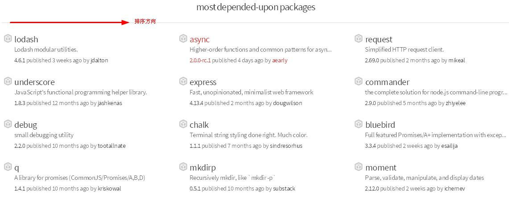

一张图学会使用Async组件进行异步流程控制
前言
前面说过，在Node.js的世界里“事事皆回调”，学习使用Node.js，最不可能回避的就是“回调”（用“调回”更直观些）。无法回避，自然要积极面对，因此开源社区出现了很多代码流程控制的解决方案。比如：bluebird，q，以及这里要图解的async。
这种基础性的技术，社区的文档极其丰富，但是我们为什么还要介绍？个人觉得，原因很简单，它真的很有必要，在只需要顺序编码的世界里，没有关于回调的操作流程或promise/a+规范（服务器帮助实现了），用不着大费周章。但是在Node.js的世界里，学习掌握一种方案，会显著提升编码能力。
为什么要介绍async，不是说bluebird性能更好吗？原因更简单：（1）Ebookcoin大量使用了aysnc，掌握它，对于理解和编码，事倍功半;（2）社区认可度高、文档丰富、使用简单、对代码没污染，无论是学习，还是使用，都没有风险。

这是async在https://npmjs.org上的依赖排名，除了lodash，就是它了。而且，bluebird和q也都在前10，也基本说明，使用流程控制组件是Node.js处理回调的标配。
概念定义
官方介绍：
Async is a utility module which provides straight-forward, powerful functions for working with asynchronous JavaScript.
简单翻译：Async是一个为处理异步Js提供简单、直接、强大功能的实用模块。
流程类别
仅仅为了好区分、好记忆，简单汇总一下，全部流程应该是下面三种情况（并非官方描述）：
1.基本流程
从程序（多个函数）执行顺序的角度考量，包括顺序执行、并行执行、混合执行等基本流程。如果把函数间是否有依赖、是否限制函数执行的数量等，又可继续演化出很多种。
2.循环流程
基于某个条件的循环操作，根据条件使用方式，提供了诸多函数。
3.集合流程
上面都是针对一个或一组数据的处理。现实中，通常要对大批相同或相似的数据，比如：大批文件、地址，进行集中处理。显然，我们第一反应是循环调用上述流程即可，不过Async提供了对集合进行异步操作的工具方法（util），如forEach等，就叫它“集合流程”吧。
使用流程的概念可以明确告诉我们，当使用async.forEach()的时候，是在异步操作，与单纯的forEach方法调用是有区别的。
用法分类
async提供了70多个实用的函数，所有这些函数都遵守一个约定：你定义的异步函数（当作一个任务），最后一个参数必须是callback函数;该callback函数的第一个参数必须是Error，且callback函数调用一次。
这些函数大致分为3类，分别对应上面的3个类别：
1.基本型（一次多任务）
这对应基本流程和演化流程部分，对一项事务，多个任务的操作，调用形式为
async.funName(tasks, callback（error, results）)
这里的funName，包括：series, parallel(parallelLimit), waterfall, auto(autoInject)等。这里的tasks可以是Array形式，也可以是Json形式，或者仅支持其中一种。
如果全部函数执行成功，callback里的results也会对应tasks的形式，将已经执行函数的结果转化为Array或Json形式;如果tasks中有一个函数出错，就会终止后续执行，调用callback，error就是该函数的错误信息，results或仅包含已经执行的结果、或同时包含未执行函数的结果占位符，或什么都不包含直接忽略。至于results具体是什么，一个log语句，自然就能知晓，不必去查文档。
2.循环型（多次单任务）
根据条件不同，可以使用下面的形式调用
async.funName(test, fn, callback)
或
async.doFunName(fn, test, callback)
这里的funName，包括：whilst（doWhilst），until（doUntil）， during（doDuring）， retry（retryable），times（timesSeries, timesLimit）、forever（该函数的条件test就不用了，已经暗含条件）。
这里的条件值可以是表达式函数，或具体的次数。区分fn与test的顺序，很简单，只要用英文的意思去理解就可以，比如：async.doWhilst（），必然是先do，后whilst，因此参数自然是async.doWhilst(fn, test, callback)
3.集合型（多次单任务）
这个官方没有当作流程表述，当作集合操作方法提供的，是我个人的理解和杜撰。我觉得把它归为流程控制更好接受和理解。因此，仿造上面的循环型调用方法，只要将条件test改为一个集合就好，集合全部使用数组array形式。
async.funName(arr, iteratee, [callback])
这里的funName，包括：
each, eachSeries, eachLimit
forEachOf, forEachOfSeries, forEachOfLimit
map, mapSeries, mapLimit
filter, filterSeries, filterLimit
reject, rejectSeries, rejectLimit
reduce, reduceRight
detect, detectSeries, detectLimit
sortBy
some, someLimit, someSeries
every, everyLimit, everySeries
concat, concatSeries
当然，async还明确提供了其他几个流程控制，比如：compose，seq，applyEach（applyEachSeries），queue（priorityQueue），cargo，iterator，race等。
另外，还有几个Util（工具）函数，如：apply，nextTick，memoize，unmemoize，ensureAsync，constant，asyncify，wrapSync，log，dir，noConflict，timeout等，这些都能极大的方便代码撰写，改善代码性能。
脑图
上述解释和方法，我们全部放在一张脑图里，结合场景，按图索骥，能够很快找到正确的处理方法。

源码解读
看看Ebookcoin里面，async的使用吧。因为在《入口程序app.js解读》里，已经提及，这里就不说了，以后遇到再解释。

趣味实践
Async官方文档提供了很多实例， 简单直观。这里，我们不再举例，而是提出一个趣味问题，供思考：
问题：Aysnc能否用于递归调用，比如：某个爬虫程序，遍历某文件夹下全部文件信息的函数等？为什么？
总结
这又是一篇老生常谈的技术分享，但写完之后，我对异步操作的流程管理，更加清晰了。Aysnc很好，但也不是万能的，它对于那些反复自调用的代码就无能为力，因为限制任务的回调就是一次。后续，有机会还会继续深入学习研究它。
另外，参考里收集了几篇比较好的文章，建议读读。《Node.js最新技术栈之Promise篇》，作者 @i5ting 一位创业者，文章深入浅出，Promise/A+规范讲解循序渐进，是我喜欢的风格。
链接
本系列文章即时更新，若要掌握最新内容，请关注下面的链接
本源文地址： https://github.com/imfly/bitcoin-on-nodejs